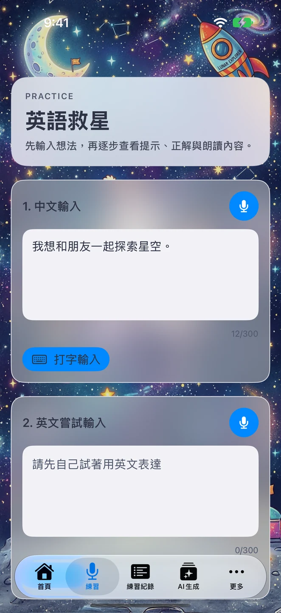
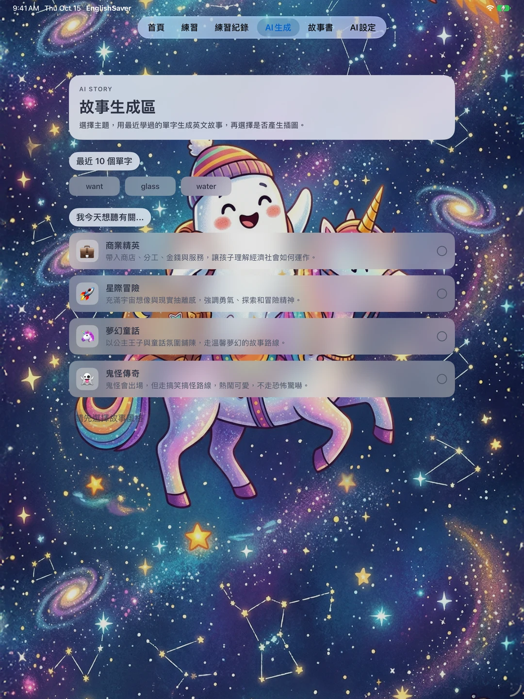
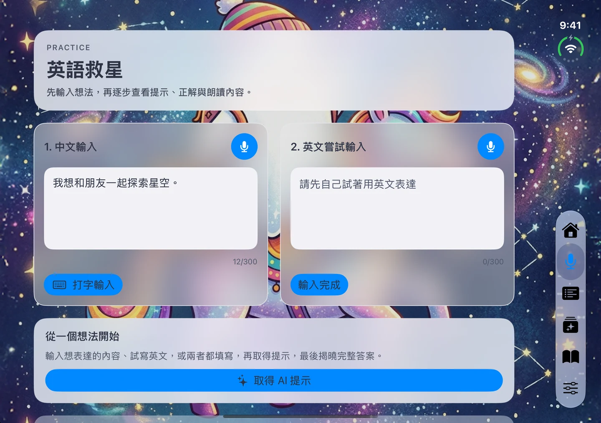
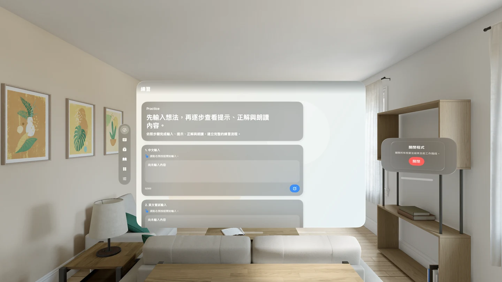
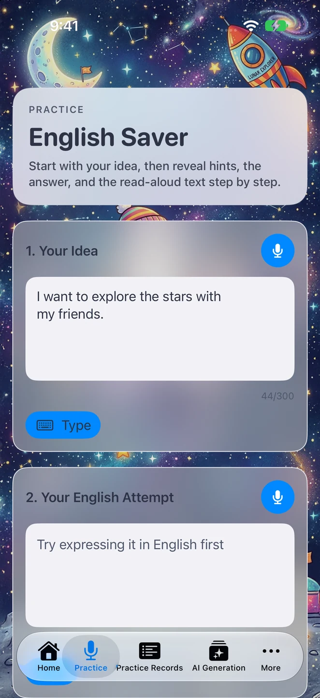
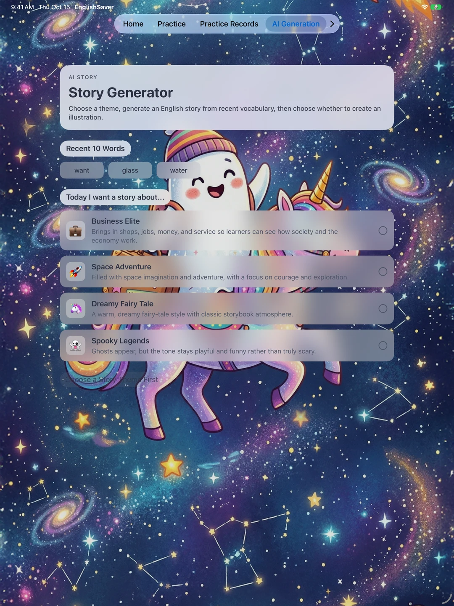
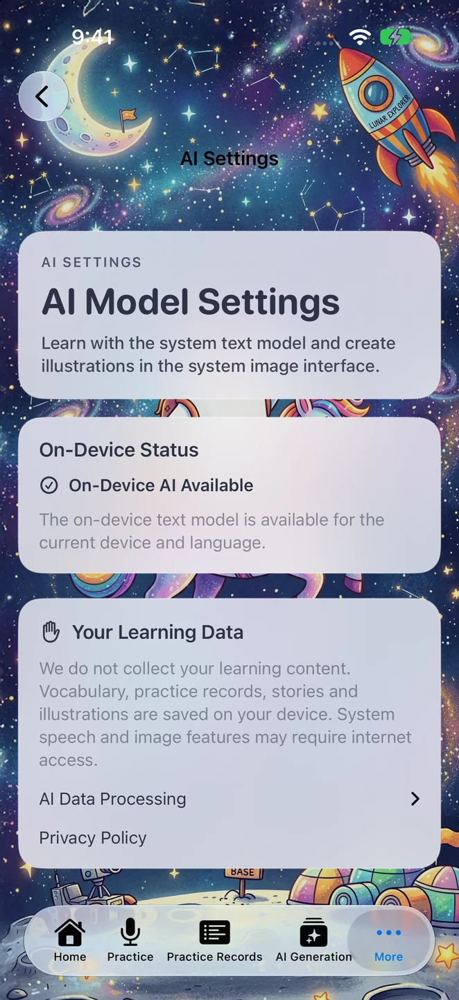
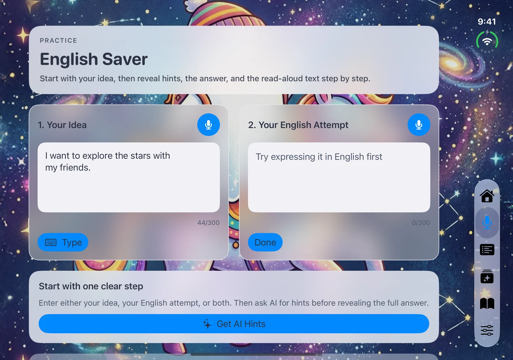
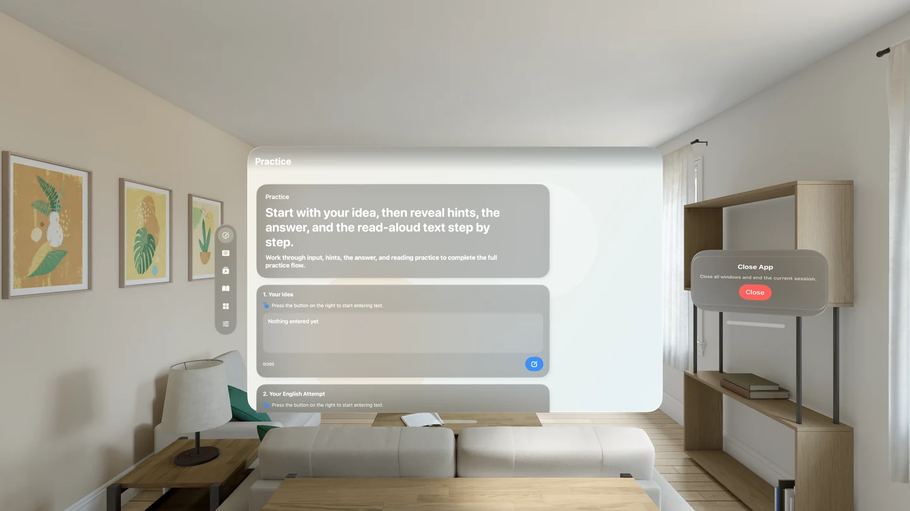

從想說的話，
開始練英文。
輸入想表達的意思，或試著寫一句英文，透過提示、修正建議與詞彙解釋慢慢練習。再把學過的單字變成故事，搭配查字典與朗讀，讓每次練習都能回顧。

- 可用裝置
- iPhone / iPad / Apple Vision Pro
- 下載方式
- 付費下載
iOS 1.42 / visionOS 1.3。付費下載，無須 API 金鑰、訂閱或 App 內購買。文字生成需支援的裝置、語言、系統設定與已下載的模型；系統生圖及語音功能可能需要網路。







學習流程
先寫下想表達的意思，再試著用英文說一次。iPhone 與 iPad 也支援語音輸入。
查看修正建議、詞彙解釋與例句，保存練習紀錄，隨時回顧。
選擇主題，用最近學過的單字生成故事，再透過閱讀、查字典與朗讀複習。
這次更新帶來什麼？
升級會保留原有生字、練習紀錄、收藏故事與插畫。取消生圖也不會刪除故事或既有圖片。
改善 iPhone Duo 的導覽與輸入區，依螢幕空間調整配置，開闔時保留練習草稿。
在空間視窗中練習與閱讀，並可開啟獨立的插圖預覽視窗。兩平台同步更新十語系介面。
AI 與隱私
新版已移除 Gemini、Groq 與自備 API 金鑰設定。練習回饋、字典解釋與故事使用 Apple 的裝置端系統文字模型；模型不可用時會顯示說明，不會轉送到外部文字服務。
生字、練習紀錄、故事與插畫保存在裝置上，開發者不蒐集你的學習內容。插畫透過 Image Playground 系統介面創作；系統生圖與語音功能可能需要網路連線，因此「不蒐集資料」不代表所有功能都能離線使用。
文字生成需支援的裝置、語言、系統設定與已下載的模型。十語系介面不代表所有語言都能生成；無法生成時，仍可使用已儲存的學習內容。生成結果可能有誤，請依學習需求核對。
閱讀英語救星專屬隱私權政策，了解新版的系統服務、本機資料保存，以及較早版本外部文字服務的過渡說明。
從今天想說的一句話開始，留下明天可以再讀、再聽的學習內容。
下載英語救星Turn the idea in your head into natural English.
Write what you want to say, or try a sentence in English. Work through hints, correction suggestions, and vocabulary explanations, then revisit the words in stories with dictionary lookups and read-aloud playback.

- Devices
- iPhone / iPad / Apple Vision Pro
- Download
- Paid download
iOS 1.42 / visionOS 1.3. Paid download; no API key, subscription, or in-app purchase required. Text generation needs a supported device, language, system settings, and downloaded model. System image and speech features may need internet.








Learning Flow
Write what you mean, then try expressing it in English. Voice input is also available on iPhone and iPad.
Read correction suggestions, word explanations, and examples. Save practice records to revisit later.
Choose a theme and create a story from recently learned words. Review through reading, dictionary lookups, and listening.
What changed in this update?
Updating preserves vocabulary, practice records, saved stories, and illustrations. Cancelling image creation also keeps the story and any existing image.
Improved iPhone Duo navigation and input areas adjust to the available space. Practice drafts stay intact when opening or closing the device.
Practise and read in spatial windows, with a separate window for illustration previews. Both platforms include updated interfaces in 10 languages.
AI and Privacy
The new versions remove Gemini, Groq, and bring-your-own API key settings. Practice feedback, dictionary explanations, and stories use Apple's on-device system text model. When the model is unavailable, the app explains why and does not forward requests to an external text service.
Vocabulary, practice records, stories, and illustrations stay on your device. The developer does not collect your learning content. Illustrations are created through the Image Playground system interface. System image and speech features may need internet access, so no data collection does not mean every feature works offline.
Text generation requires a supported device, language, system settings, and downloaded model. The 10 interface languages do not guarantee model support for every language. Saved learning content remains available when generation is unavailable. Generated content may contain errors; check it for your learning needs.
Read the EnglishSaver Privacy Policy for system services, local storage, and the transition from external text services in earlier versions.
Start with something you want to say today, and keep a story you can read and listen to again tomorrow.
Download English Saver